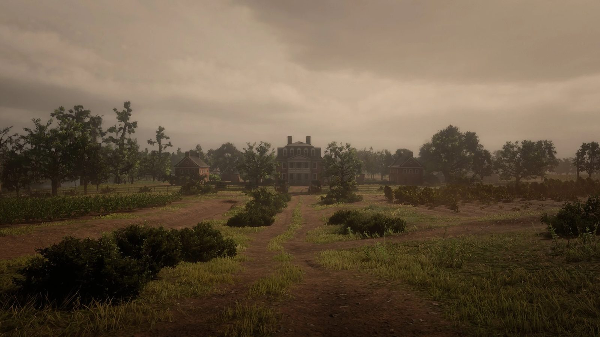
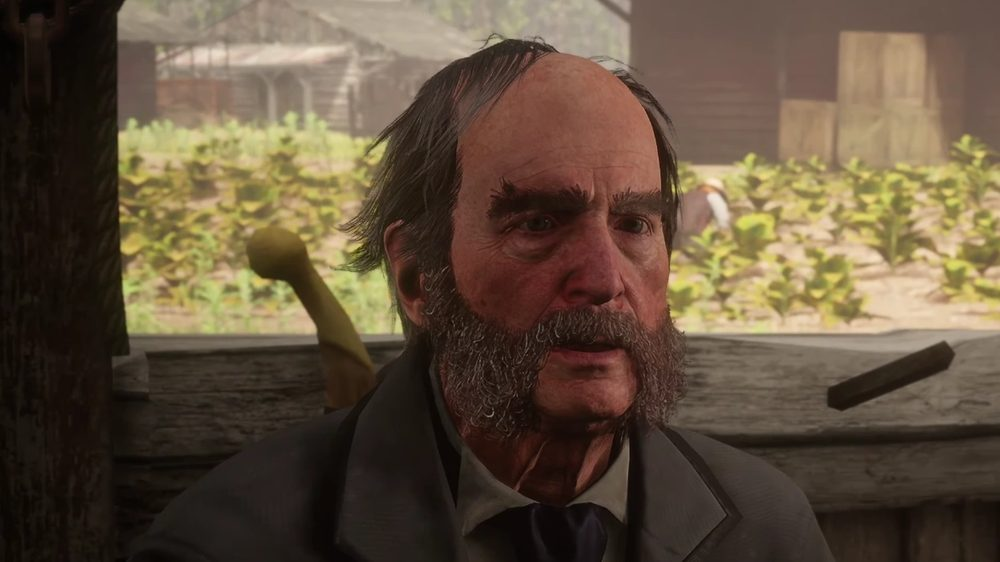
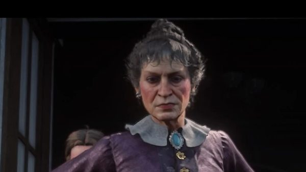
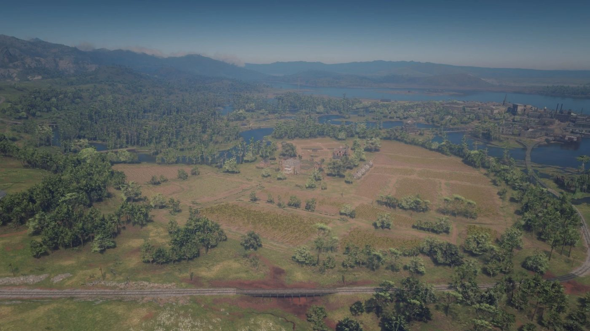

Character · Lemoyne
Tavish Gray
Tavish Gray is the head of the Gray family, tobacco planters at Caliga Hall near Rhodes, in Red Dead Redemption 2.
His family has been feuding with the Braithwaites of Catherine Braithwaite for generations. In chapter 3, the Van der Linde gang works for both sides.
- Family
- Gray
- Role
- Patriarch, tobacco planter
- Residence
- Caliga Hall, east of Rhodes
- Son
- Beau Gray
- Status
- Found dead at Caliga Hall
- Games
- Red Dead Redemption 2
Biography
The Gray family
The Grays are a family of Scottish descent who grow tobacco at Caliga Hall, in Bayou Nwa, just east of Rhodes. Tavish is the eldest member of the family. His son, Beau Gray, is secretly in love with Penelope Braithwaite.
Leigh Gray, the sheriff of Rhodes, belongs to the same family. The game is inconsistent about the link: Beau calls Leigh his uncle, while Dutch and Arthur refer to Leigh as Tavish's son.
Horse Flesh for Dinner
In "Horse Flesh for Dinner", Tavish receives Arthur, John and Javier at Caliga Hall. He asks them to steal the Braithwaites' prize horses, and says the animals will sell for 5,000 dollars. The three men take the horses from Braithwaite Manor. The fence, Clay Davies, pays them 700 dollars.
The Rhodes ambush
Working for Catherine Braithwaite, Arthur and Sean MacGuire set fire to the Grays' tobacco fields. The Grays then realise the gang has been working for both families.
In "A Short Walk in a Pretty Town", the Grays offer the gang a security job in Rhodes. It is a trap. Sean is shot dead as soon as it starts. Leigh Gray takes Bill Williamson hostage, and Arthur kills him outside the sheriff's office. Tavish is not present.
Relationships

Catherine Braithwaite
Matriarch of the rival family. They never meet on screen.

Dutch van der Linde
Courts the Grays while the gang works for the Braithwaites.

Arthur Morgan
Steals the Braithwaites' horses for him, then burns his fields.

Sean MacGuire
Killed in the Grays' ambush in Rhodes.
Fate
Tavish is later found dead in a chair on the back porch of Caliga Hall. Beside him is a letter from Malcolm Moffat, a historian at the University of Edinburgh. It states that his ancestor, Ross Gray, was a paid informer for the Duke of Cumberland, not an exiled Jacobite. The game does not show how Tavish died.
Arthur's journal entry on the discovery reads: "Guess the Gray family ain't quite the proud noble Southern patriots they pretended to be."
Behind the scenes
Tavish Gray is played by Madison Arnold, who also voiced Jon Gravelli in Grand Theft Auto IV.
Gallery
